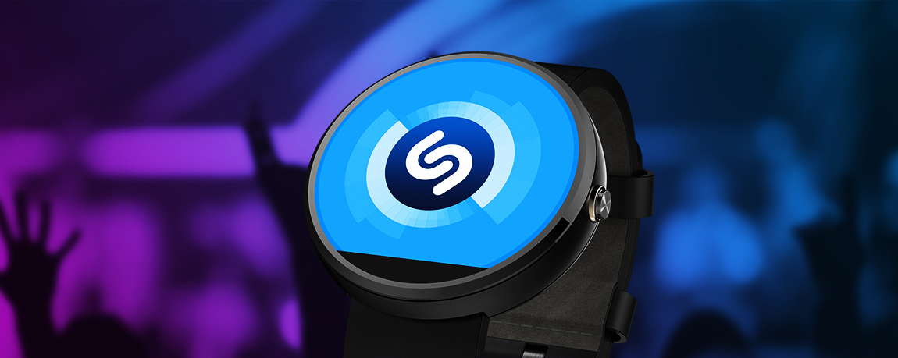

Twój zegarek zna się na muzyce
Gdy zainstalujesz Shazzam na komórce, możesz także używać od razu wersji wearable aplikacji. Każdy, kto kiedykolwiek chciał rozpoznać muzykę "ze słuchu" zetknął się z Shazzam. Niezła skuteczność i pamięć wyszukanych utworów to podstawa. Ale jest i pewien zgrzyt. Wersja z telefonu, nie działa, gdy na smartfonie Shazzam nie jest włączony.

Dlaczego warto zainstalować Shazzam?
Bo kiedyś możesz tego potrzebować. Kiedyś... może... Fajny bajer.Jednym zdaniem:
To jedna z tych dobrze zrobionych, świetnie działających i łądnie wyglądających aplikacji na zegarek, które zazwyczaj nie są nam w ogóle potrzebne.
Pobierz z Google Play

Opublikowano: 28.03.2017r. Wszystkie materiały pochodzą ze strony developera